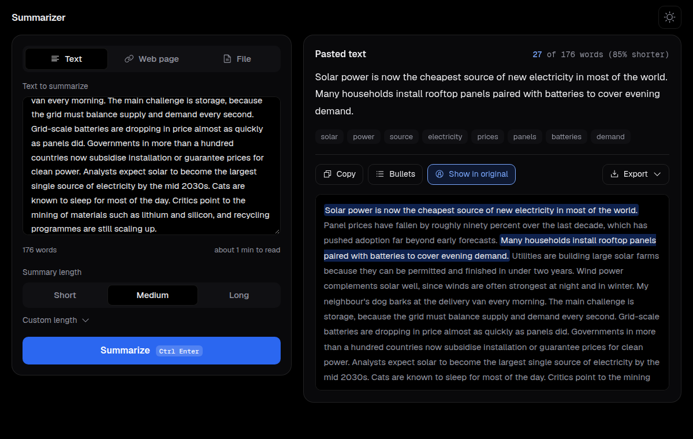

Stays on your computer
Your documents are never uploaded. No account, no tracking, and it works offline after the first run.
A free desktop app that picks the key sentences from any document. It runs offline and never invents facts.
Animation: a document is typed out, then the key sentences are highlighted and collected into a short summary.
Your documents are never uploaded. No account, no tracking, and it works offline after the first run.
Summaries are picked from the source, so they can't contain a fact the document doesn't.
Highlight the chosen sentences in the original text and check them against the source.

Paste text, drop a file or add a link. A CSV gives you one summary per row.
Your text is cut into sentences.
A compact model turns each sentence into numbers that capture its meaning. It is about 130 MB and downloads once.
TextRank lets similar sentences vouch for each other. Sentences near the main topic score higher.
MMR keeps the important sentences, drops the repeats, and puts them back in their original order.
Optional: add your own Anthropic API key and Claude can smooth the chosen sentences into prose. It is off by default.
Run the installer. It installs for your user, so it needs no admin rights. Windows may warn because the app isn't signed yet: choose More info, then Run anyway.
Open the disk image and drag Summarizer to Applications. The app isn't signed yet, so the first time use right-click, Open (macOS 14 and earlier) or System Settings, Privacy and Security, Open Anyway (macOS 15 and later). Apple Silicon Macs only.
The AppImage runs on any distribution. If you prefer your package manager, pick the package for your system. Each one includes its own browser engine.
Needs glibc 2.35 or newer, which means Ubuntu 22.04, Debian 12, Fedora 36 and later. Ubuntu 22.04 and newer need libfuse2 to run an AppImage.
Other formats, checksums and the release notes are on the releases page.
Python 3.10 or newer. A virtual environment or pipx keeps things tidy.
pip install "text-summarizer-aweebtaku[desktop]"summarizer-desktoppip install text-summarizer-aweebtakusummarize report.pdf -n 5 -b -ksummarize https://example.com/postfrom text_summarizer import summarize_file
for name, summary in summarize_file("report.pdf", ratio=0.2):
print(name, summary)